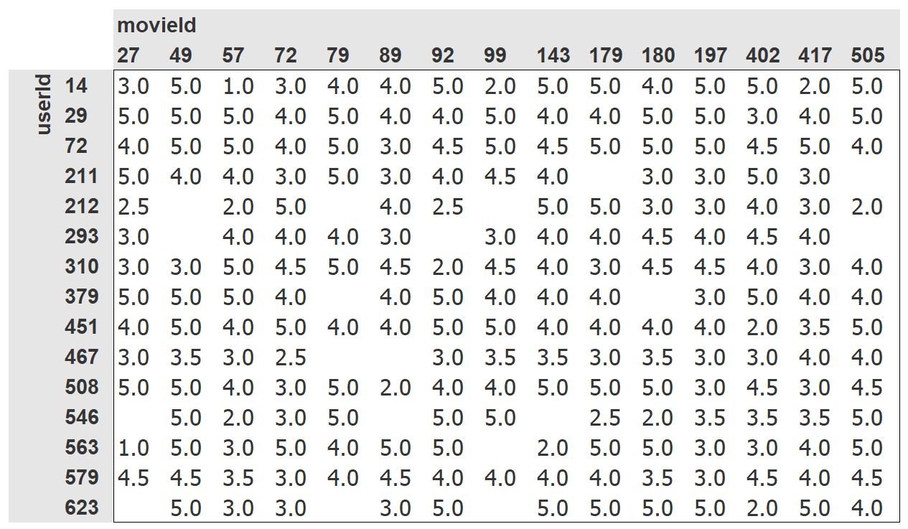

# load required packages and set seed for reproducibility
from fastai.collab import *
from fastai.tabular.all import *
set_seed(42)This is my follow up to the second part of Lesson 7: Practical Deep Learning for Coders 2022 in which Jeremy shows how to build a Collaborative Filtering model from scratch, within Excel, and also using PyTorch, and explains latent factors and emdedding
Recommendation Systems
One very common problem to solve is when you have a number of users and a number of products, and you want to recommend which products are most likely to be useful for which users. There are many variations of this: for example, recommending movies (such as on Netflix), figuring out what to highlight for a user on a home page, deciding what stories to show in a social media feed, and so forth. There is a general solution to this problem, called collaborative filtering, which works like this: look at what products the current user has used or liked, find other users that have used or liked similar products, and then recommend other products that those users have used or liked.
For example, on Netflix you may have watched lots of movies that are science fiction, full of action, and were made in the 1970s. Netflix may not know these particular properties of the films you have watched, but it will be able to see that other people that have watched the same movies that you watched also tended to watch other movies that are science fiction, full of action, and were made in the 1970s. In other words, to use this approach we don’t necessarily need to know anything about the movies, except who like to watch them.
There is actually a more general class of problems that this approach can solve, not necessarily involving users and products. Indeed, for collaborative filtering we more commonly refer to items, rather than products. Items could be links that people click on, diagnoses that are selected for patients, and so forth.
The key foundational idea is that of latent factors. In the Netflix example, we started with the assumption that you like old, action-packed sci-fi movies. But you never actually told Netflix that you like these kinds of movies. And Netflix never actually needed to add columns to its movies table saying which movies are of these types. Still, there must be some underlying concept of sci-fi, action, and movie age, and these concepts must be relevant for at least some people’s movie watching decisions.
This is chapter 8 of the book Practical Deep Learning for Coders, provided courtesy of O’Reilly Media. The full book is available as Jupyter Notebooks. A free course that covers the book is available here.
For this chapter we are going to work on this movie recommendation problem. We’ll start by getting some data suitable for a collaborative filtering model.
A First Look at the Data
We do not have access to Netflix’s entire dataset of movie watching history, but there is a great dataset that we can use, called MovieLens. This dataset contains tens of millions of movie rankings (a combination of a movie ID, a user ID, and a numeric rating), although we will just use a subset of 100,000 of them for our example. If you’re interested, it would be a great learning project to try and replicate this approach on the full 25-million recommendation dataset, which you can get from their website.
The dataset is available through the usual fastai function:
# download data
path = untar_data(URLs.ML_100k)According to the README, the main table is in the file u.data. It is tab-separated and the columns are, respectively user, movie, rating, and timestamp. Since those names are not encoded, we need to indicate them when reading the file with Pandas. Here is a way to open this table and take a look:
# load in table - specify colums names
ratings = pd.read_csv(path/'u.data', delimiter='\t', header=None, # tab(t) separated file, instead of a comma(c) separated file
names=['user','movie','rating','timestamp']) # need to specify columns as not encoded
# look at the first 5 rows
ratings.head()| user | movie | rating | timestamp | |
|---|---|---|---|---|
| 0 | 196 | 242 | 3 | 881250949 |
| 1 | 186 | 302 | 3 | 891717742 |
| 2 | 22 | 377 | 1 | 878887116 |
| 3 | 244 | 51 | 2 | 880606923 |
| 4 | 166 | 346 | 1 | 886397596 |
Although this has all the information we need, it is not a particularly helpful way for humans to look at this data. Here is the same data cross-tabulated into a human-friendly table:

We have selected just a few of the most popular movies, and users who watch the most movies, for this crosstab example. The empty cells in this table are the things that we would like our model to learn to fill in. Those are the places where a user has not reviewed the movie yet, presumably because they have not watched it. For each user, we would like to figure out which of those movies they might be most likely to enjoy.
If we knew for each user to what degree they liked each important category that a movie might fall into, such as genre, age, preferred directors and actors, and so forth, and we knew the same information about each movie, then a simple way to fill in this table would be to multiply this information together for each movie and use a combination. For instance, assuming these factors range between -1 and +1, with positive numbers indicating stronger matches and negative numbers weaker ones, and the categories are science-fiction, action, and old movies, then we could represent the movie The Last Skywalker as:
# embed features of the movie The Last Skywalker by creating vector of values between -1 and +1
# science fiction 0.98, action 0.9, old movies -0.9
last_skywalker = np.array([0.98,0.9,-0.9])Here, for instance, we are scoring very science-fiction as 0.98, very action as 0.9, and very not old as -0.9. We could represent a user who likes modern sci-fi action movies as:
# embed the features of a user based on their movie preferences by creating vector of values between -1 and +1
# science fiction 0.9, action 0.8, old movies -0.6
user1 = np.array([0.9,0.8,-0.6])and we can now calculate the match between this combination:
# calculate the dot product of the two vectors to see whether LastSkywalker is a good match for user 1
(user1*last_skywalker).sum()2.1420000000000003When we multiply two vectors together and add up the results, this is known as the dot product. It is used a lot in machine learning, and forms the basis of matrix multiplication. We will be looking a lot more at matrix multiplication and dot products later.
jargon: dot product: The mathematical operation of multiplying the elements of two vectors together, and then summing up the result.
On the other hand, we might represent the movie Casablanca as:
# embed features of the movie Casablanca by creating vector of values between -1 and +1
# science fiction 0.98, action 0.9, old movies -0.9
casablanca = np.array([-0.99,-0.3,0.8])The match between this combination is:
# calculate the dot product of the two vectors to see whether Casabalance is a good match for user 1
(user1*casablanca).sum()-1.611Since we don’t know what latent factors actually are, and we don’t know how to score them for each user and movie, we should learn them.
Collaborative filtering - using Excel
The problem is we haven’t been given any information about the users, or the movies, and we might not even know what things about movies actually matter to users. But, not to worry, we can just use Stochastic Gradient Descent (SGD) to find them!
There is surprisingly little difference between specifying the structure of a model, as we did in the last section, and learning one, since we can just use our general gradient descent approach.
Step 1: randomly initialize some parameters
These parameters will be a set of latent factors for each user and movie. We will have to decide how many to use. We will discuss how to select this shortly, but for illustrative purposes let’s use 5 for now. Because each user will have a set of these factors and each movie will have a set of these factors, we can show these randomly initialized values right next to the users and movies in our crosstab, and we can then fill in the dot products for each of these combinations in the middle.
So, the initialized latent factors for movieId 27 are 0.71, 0.81, 0.74, 0.04, 0.04 and the latent factors for userID 14 are 0.19, 0.63, 0.31, 0.44, 0.51. We then multiply these together using the MMULT matrix multiplication function within Excel to obtain our initial predictions.
We don’t know what these factors are, but for example we can interpret that userID 14 doesn’t feel very strongly, with a value of 0.19 about movieID factor 1 which has a value of 0.71
This is what it looks like in Microsoft Excel:
Step 2: Calculate our predictions using Matrix Multiplication
As we’ve discussed, we can do this by simply taking the dot product of each movie with each user. If, for instance, the first latent user factor represents how much the user likes action movies, and the first latent movie factor represents if the movie has a lot of action or not, the product of those will be particularly high if either the user likes action movies and the movie has a lot of action in it or the user doesn't like action movies and the movie doesn't have any action in it. On the other hand, if we have a mismatch (a user loves action movies but the movie isn’t an action film, or the user doesn’t like action movies and it is one), the product will be very low.
Step 3: calculate our loss
We can use any loss function that we wish; let’s pick mean squared error for now, since that is one reasonable way to represent the accuracy of a prediction.
Step 4: optimize using Stochastic Gradient Descent(SGD) - the Solver function in Excel approximates this
That’s all we need. With this in place, we can optimize our parameters (that is, the latent factors) using stochastic gradient descent, such as to minimize the loss. At each step, the stochastic gradient descent optimizer will calculate the match between each movie and each user using the dot product, and will compare it to the actual rating that each user gave to each movie. It will then calculate the derivative of this value and will step the weights by multiplying this by the learning rate. After doing this lots of times, the loss will get better and better, and the recommendations will also get better and better.
The above spreadsheet screenshot shows the updated predictions after applying Stohastic Gradient Descent using Excel’s inbuilt Solver function - note that the movie rating predictions are now much more in line with the actual ratings (with values betwen 0 and 5) and our loss function RMSE has reduced from 2.8 to 0.42.
Using PyTorch to do the same thing
To use the usual Learner.fit function we will need to get our data into a DataLoaders, so let’s focus on that now.
When showing the data, we would rather see movie titles than their IDs. The table u.item contains the correspondence of IDs to titles:
# load in movie titles table
movies = pd.read_csv(path/'u.item', delimiter='|', encoding='latin-1', #
usecols=(0,1), names=('movie','title'), header=None)
movies.head()| movie | title | |
|---|---|---|
| 0 | 1 | Toy Story (1995) |
| 1 | 2 | GoldenEye (1995) |
| 2 | 3 | Four Rooms (1995) |
| 3 | 4 | Get Shorty (1995) |
| 4 | 5 | Copycat (1995) |
We can merge this with our ratings table to get the user ratings by title:
# merge ratings and movie tables
ratings = ratings.merge(movies)
ratings.head()| user | movie | rating | timestamp | title | |
|---|---|---|---|---|---|
| 0 | 196 | 242 | 3 | 881250949 | Kolya (1996) |
| 1 | 63 | 242 | 3 | 875747190 | Kolya (1996) |
| 2 | 226 | 242 | 5 | 883888671 | Kolya (1996) |
| 3 | 154 | 242 | 3 | 879138235 | Kolya (1996) |
| 4 | 306 | 242 | 5 | 876503793 | Kolya (1996) |
We can now build a DataLoaders object from this table. By default, it takes the first column for the user, the second column for the item (here our movies), and the third column for the ratings. We need to change the value of item_name in our case to use the titles instead of the IDs:
# build a Collaborative Filtering DataLoaders from out ratings DataFrame
# needs a user column and an item column - we have a user column called user so don't need to pass in
dls = CollabDataLoaders.from_df(ratings, item_name='title', bs=64) # need to pass in item_name to get title
dls.show_batch()| user | title | rating | |
|---|---|---|---|
| 0 | 542 | My Left Foot (1989) | 4 |
| 1 | 422 | Event Horizon (1997) | 3 |
| 2 | 311 | African Queen, The (1951) | 4 |
| 3 | 595 | Face/Off (1997) | 4 |
| 4 | 617 | Evil Dead II (1987) | 1 |
| 5 | 158 | Jurassic Park (1993) | 5 |
| 6 | 836 | Chasing Amy (1997) | 3 |
| 7 | 474 | Emma (1996) | 3 |
| 8 | 466 | Jackie Chan's First Strike (1996) | 3 |
| 9 | 554 | Scream (1996) | 3 |
To represent collaborative filtering in PyTorch we can’t just use the crosstab representation directly, especially if we want it to fit into our deep learning framework. We can represent our movie and user latent factor tables as simple matrices:
n_users = len(dls.classes['user']) # set number of users = number of rows of users
n_movies = len(dls.classes['title']) # set number of movies = nuumber of rows of movies
n_factors = 5 # set number of columns (latent factors) to whatever we want
# create initial random weightings for user latent factors
# user EMBEDDING matrix
user_factors = torch.randn(n_users, n_factors) # random tensors
# create initial random weightings for movie latent factors
# movie EMBEDDING matrix
movie_factors = torch.randn(n_movies, n_factors) # random tensors Note fast.ai has a built in formula for setting an appropriate number of latent factors
user_factorstensor([[-1.0827, 0.2138, 0.9310, -0.2739, -0.4359],
[-0.5195, 0.7613, -0.4365, 0.1365, 1.3300],
[-1.2804, 0.0705, 0.6489, -1.2110, 1.8266],
...,
[ 0.8009, -0.4734, -0.8962, -0.7348, -0.0246],
[ 0.3354, -0.8262, -0.1541, 0.4699, 0.4873],
[ 2.4054, -0.2156, -1.4126, -0.2467, 1.0571]])movie_factorstensor([[-0.3978, 0.4563, 1.2301, 0.3745, 0.9689],
[-1.1836, -0.5818, -0.5587, -0.4316, 0.2128],
[ 0.0420, 1.3201, -0.7999, 1.1123, -0.7585],
...,
[ 2.4743, 1.3068, 0.4540, 0.6958, 0.5228],
[ 2.3970, -0.2559, -1.7196, 1.0440, -0.2662],
[ 0.2786, -0.6593, 0.5260, -0.3416, -1.3938]])To calculate the result for a particular movie and user combination, we have to look up the index of the movie in our movie latent factor matrix and the index of the user in our user latent factor matrix; then we can do our dot product between the two latent factor vectors. But look up in an index is not an operation our deep learning models know how to do. They know how to do matrix products, and activation functions.
Fortunately, it turns out that we can represent look up in an index as a matrix product. The trick is to replace our indices with one-hot-encoded vectors. Here is an example of what happens if we multiply a vector by a one-hot-encoded vector representing the index 3:
Taking the dot product of a one hot coded vector and something, is the same as looking up the index in an array.
# create a one-hot encoded vector of length n_users, with 2nd element set to 1 and everything else set to 0
one_hot_2 = one_hot(2, n_users).float()# matrix multiplication - users
# .t transposes cols and rows to enable matrix multiplication
# @ is the symbol for matrix multipy
user_factors.t() @ one_hot_2tensor([-1.2804, 0.0705, 0.6489, -1.2110, 1.8266])It gives us the same vector as the one at index 2 in the user_factor matrix as shown previously.
# create a one-hot encoded vector of length n_users, with 1st element set to 1 and everything else set to 0
one_hot_1 = one_hot(1, n_movies).float()# matrix multiplication - movie
# .t transposes cols and rows to enable matrix multiplication
# @ is the symbol for matrix multipy
movie_factors.t() @ one_hot_1tensor([-1.1836, -0.5818, -0.5587, -0.4316, 0.2128])It gives us the same vector as the one at index 1 in the movie_factors matrix as shown previously.
Embedding layer
If we do that for a few indices at once, we will have a matrix of one-hot-encoded vectors, and that operation will be a matrix multiplication! This would be a perfectly acceptable way to build models using this kind of architecture, except that it would use a lot more memory and time than necessary. We know that there is no real underlying reason to store the one-hot-encoded vector, or to search through it to find the occurrence of the number one — we should just be able to index into an array directly with an integer. Therefore, most deep learning libraries, including PyTorch, include a special layer that does just this; it indexes into a vector using an integer, but has its derivative calculated in such a way that it is identical to what it would have been if it had done a matrix multiplication with a one-hot-encoded vector. This is called an embedding.
jargon: Embedding: Multiplying by a one-hot-encoded matrix, using the computational shortcut that it can be implemented by simply indexing directly. This is quite a fancy word for a very simple concept. The thing that you multiply the one-hot-encoded matrix by (or, using the computational shortcut, index into directly) is called the
embedding matrix.
In computer vision, we have a very easy way to get all the information of a pixel through its RGB values: each pixel in a colored image is represented by three numbers. Those three numbers give us the redness, the greenness and the blueness, which is enough to get our model to work afterward (with values between 0 and 255).
For the problem at hand, we don’t have the same easy way to characterize a user or a movie. There are probably relations with genres: if a given user likes romance, they are likely to give higher scores to romance movies. Other factors might be whether the movie is more action-oriented versus heavy on dialogue, or the presence of a specific actor that a user might particularly like.
How do we determine numbers to characterize those? The answer is, we don’t. We will let our model learn them. By analyzing the existing relations between users and movies, our model can figure out itself the features that seem important or not. This is what embeddings are. We will attribute to each of our users and each of our movies a random vector of a certain length (here, n_factors=5), and we will make those learnable parameters. That means that at each step, when we compute the loss by comparing our predictions to our targets, we will compute the gradients of the loss with respect to those embedding vectors and update them with the rules of SGD (or another optimizer).
At the beginning, those numbers don’t mean anything since we have chosen them randomly, but by the end of training, they will. By learning on existing data about the relations between users and movies, without having any other information, we will see that they still get some important features, and can isolate blockbusters from independent cinema, action movies from romance, and so on.
We are now in a position that we can create our whole model from scratch.
Creating a Collaborative Filtering model in PyTorch from Scratch
Before we can write a model in PyTorch, we first need to learn the basics of object-oriented programming and Python. If you haven’t done any object-oriented programming before, we will give you a quick introduction here, but we would recommend looking up a tutorial and getting some practice before moving on.
The key idea in object-oriented programming is the class. A model is a class. We have been using classes throughout this book, such as DataLoader, string, and Learner. Python also makes it easy for us to create new classes. Here is an example of a simple class:
# example of a simple class
class Example:
def __init__(self, a): self.a = a # __init__ any method surrounded in double underscores like this is considered special
def say(self,x): return f'Hello {self.a}, {x}.'The most important piece of this is the special method called __init__ (pronounced dunder init). In Python, any method surrounded in double underscores like this is considered special. It indicates that there is some extra behavior associated with this method name. In the case of __init__, this is the method Python will call when your new object is created. So, this is where you can set up any state that needs to be initialized upon object creation.
Any parameters included when the user constructs an instance of your class will be passed to the __init__ method as parameters. Note that the first parameter to any method defined inside a class is self, so you can use this to set and get any attributes that you will need:
ex = Example('Sylvain') # so self.a now equals Sylvain
ex.say('nice to meet you') # x is now 'nice to meet you - we can access the say function within the Example class using .say'Hello Sylvain, nice to meet you.'Also note that creating a new PyTorch module requires inheriting from Module. Inheritance is an important object-oriented concept that we will not discuss in detail here—in short, it means that we can add additional behavior to an existing class. PyTorch already provides a Module class, which provides some basic foundations that we want to build on. So, we add the name of this superclass after the name of the class that we are defining, as shown in the following example.
The final thing that you need to know to create a new PyTorch module is that when your module is called, PyTorch will call a method in your class called forward, and will pass along to that any parameters that are included in the call. Here is the class defining our dot product model:
# create a class to define our dot product module
class DotProduct(Module): # putting something in parentheses after a class name creates a SUPERclass
def __init__(self, n_users, n_movies, n_factors): # specify number of users, movies, and latent factors
self.user_factors = Embedding(n_users, n_factors) # create Embedding matrix for users - we will cover how to create Embedding Class later
self.movie_factors = Embedding(n_movies, n_factors) # create Embedding matrix for movies - we will cover how to create Embedding Class later
# calculation of our model has to be defined in a function called forward
def forward(self, x): # pass the object itself and thing calculating on - user and movie for a batch
# each row will be one user and movie combination, columns will be users and movies
users = self.user_factors(x[:,0]) # grab first column i.e every row, and look it up using our user Embedding matrix
movies = self.movie_factors(x[:,1]) # grab second column i.e every row, and look it up using our movie Embedding matrix
return (users * movies).sum(dim=1) # calculate the dot product - # dim = 1 because we are summing across COLUMNS for each row # dim = 0 would sum across ROWSIf you haven’t seen object-oriented programming before, then don’t worry, you won’t need to use it much in this book. We are just mentioning this approach here, because most online tutorials and documentation will use the object-oriented syntax.
Note that the input of the model is a tensor of shape batch_size x 2, where the first column (x[:, 0]) contains the user IDs and the second column (x[:, 1]) contains the movie IDs. As explained before, we use the embedding layers to represent our matrices of user and movie latent factors:
# inputs to the model are 64 rows x 2 columns - column 0 user IDs and column 1 movie IDs
x,y = dls.one_batch()
x.shapetorch.Size([64, 2])Now that we have defined our architecture, and created our parameter matrices, we need to create a Learner to optimize our model. In the past we have used special functions, such as cnn_learner, which set up everything for us for a particular application. Since we are doing things from scratch here, we will use the plain Learner class:
# define our Dot Product model
model = DotProduct(n_users, n_movies, 50)
# we can pass our Dot Product class to our learner
learn = Learner(dls, model, loss_func=MSELossFlat())We are now ready to fit our model:
# fit (train) our model
learn.fit_one_cycle(5, 5e-3) # 5 epochs, learning rate 5e^-3| epoch | train_loss | valid_loss | time |
|---|---|---|---|
| 0 | 1.385412 | 1.293633 | 00:04 |
| 1 | 1.061318 | 1.070560 | 00:04 |
| 2 | 0.968811 | 0.976037 | 00:04 |
| 3 | 0.862989 | 0.883624 | 00:04 |
| 4 | 0.797610 | 0.869864 | 00:04 |
Squeezing our predictions using Sigmoid
The first thing we can do to make this model a little bit better is to force those predictions to be between 0 and 5. For this, we just need to use sigmoid_range. Sigmoid on its own squeezes values between 0 and 1 but if we multiply by 5 that wil ensure the values are between 0 and 5. One thing we discovered empirically is that it’s better to have the range go a little bit over 5, so we use (0, 5.5):
# tweak our Dot Product Class to squeeze preds between 0 and 5
class DotProduct(Module):
def __init__(self, n_users, n_movies, n_factors, y_range=(0,5.5)): # set range for predictions between 0 and 5 (with a little bit extra for comfort)
self.user_factors = Embedding(n_users, n_factors) # create Embedding matrix for users - we will cover how to create Embedding Class later
self.movie_factors = Embedding(n_movies, n_factors) # create Embedding matrix for movies - we will cover how to create Embedding Class later
self.y_range = y_range # range of predictions specified
def forward(self, x):
users = self.user_factors(x[:,0]) # grab first column i.e every row, and look it up using our user Embedding matrix
movies = self.movie_factors(x[:,1]) # grab second column i.e every row, and look it up using our movie Embedding matrix
return sigmoid_range((users * movies).sum(dim=1), *self.y_range) # force predictions to be between 0 and 5 using sigmoid function# redefine our Dot Product model
model = DotProduct(n_users, n_movies, 50)
# pass in our Dot Product class to our learner as before
learn = Learner(dls, model, loss_func=MSELossFlat())
# fit (train) our model
learn.fit_one_cycle(5, 5e-3) # 5 epochs, learning rate 5e^-3| epoch | train_loss | valid_loss | time |
|---|---|---|---|
| 0 | 0.991383 | 0.971459 | 00:04 |
| 1 | 0.862119 | 0.888047 | 00:04 |
| 2 | 0.677498 | 0.857523 | 00:04 |
| 3 | 0.464585 | 0.863056 | 00:04 |
| 4 | 0.384263 | 0.867252 | 00:05 |
This is negligibly better, but we cann improve on this.
Introducing Bias into our model
One obvious missing piece is that some users are just more positive or negative in their recommendations than others, and some movies are just plain better or worse than others. But in our dot product representation we do not have any way to encode either of these things. If all you can say about a movie is, for instance, that it is very sci-fi, very action-oriented, and very not old, then you don’t really have any way to say whether most people like it.
That’s because at this point we only have weights; we do not have biases. If we have a single number for each user that we can add to our scores, and ditto for each movie, that will handle this missing piece very nicely. Let’s first look at this in Excel - we simply initialize an additional randomized bias factor to add to our existing latent factors and then optimize as before. This results in an improvement - our RMSE drops from 0.42 to 0.35 - see spreadsheet screenshot below:

Let’s jump back to Python and adjust our model architecture there to introduce bias into our model:
# create new Class to include bias
class DotProductBias(Module):
def __init__(self, n_users, n_movies, n_factors, y_range=(0,5.5)): # set range for predictions between 0 and 5 (with a little bit extra for comfort as sigmoid won't return as high as 1)
self.user_factors = Embedding(n_users, n_factors) # create Embedding matrix for users - we will cover how to create Embedding Class later
self.user_bias = Embedding(n_users, 1) # account for user BIAS (other factors outside of our latent factors)
self.movie_factors = Embedding(n_movies, n_factors) # create Embedding matrix for movies - we will cover how to create Embedding Class later
self.movie_bias = Embedding(n_movies, 1) # account for movie BIAS (other factors outside of our latent factors)
self.y_range = y_range # range of predictions specified
def forward(self, x):
users = self.user_factors(x[:,0]) # grab first column i.e every row, and look it up using our user Embedding matrix
movies = self.movie_factors(x[:,1]) # grab second column i.e every row, and look it up using our movie Embedding matrix
res = (users * movies).sum(dim=1, keepdim=True) # calculate the dot product - # dim = 1 because we are summing across COLUMNS for each row # dim = 0 would sum across ROWS
res += self.user_bias(x[:,0]) + self.movie_bias(x[:,1]) # update dor product results for BIAS
return sigmoid_range(res, *self.y_range) # force predictions to be between 0 and 5 using sigmoid functionLet’s try training this and see how it goes:
# define our Dot Product Bias model
model = DotProductBias(n_users, n_movies, 50)
# pass in our Dot Product Bias class to our learner as before
learn = Learner(dls, model, loss_func=MSELossFlat())
# fit (train) our model
learn.fit_one_cycle(5, 5e-3) # 5 epochs, learning rate 5e^-3| epoch | train_loss | valid_loss | time |
|---|---|---|---|
| 0 | 0.951611 | 0.925811 | 00:05 |
| 1 | 0.819404 | 0.855196 | 00:05 |
| 2 | 0.616164 | 0.856704 | 00:05 |
| 3 | 0.403988 | 0.885035 | 00:05 |
| 4 | 0.294023 | 0.891860 | 00:05 |
Unlike in Excel, instead of being better, in PyTorch our validation loss has actually gone up (at least by the end of training)! Why is that? If we look at both trainings carefully, we can see the validation loss stopped improving in the middle and started to get worse. As we’ve seen, this is a clear indication of overfitting. In this case, there is no way to use data augmentation, so we will have to use another regularization technique. One way to help avoid overfitting is an approach called weight decay.
Weight Decay (L2 regularization)
Weight decay, or L2 regularization, consists in adding to your loss function the sum of all the weights squared. Why do that? Because when we compute the gradients, it will add a contribution to them that will encourage the weights to be as small as possible.
Why would it prevent overfitting? The idea is that the larger the coefficients are, the sharper canyons we will have in the loss function. If we take the basic example of a parabola, y = a * (x**2), the larger a is, the more narrow the parabola is:
# example illustrating imapct of using weight decay
x = np.linspace(-2,2,100)
a_s = [1,2,5,10,50]
ys = [a * x**2 for a in a_s]
_,ax = plt.subplots(figsize=(8,6))
for a,y in zip(a_s,ys): ax.plot(x,y, label=f'a={a}')
ax.set_ylim([0,5])
ax.legend();So, letting our model learn high parameters might cause it to fit all the data points in the training set with an overcomplex function that has very sharp changes, which will lead to overfitting.
Limiting our weights from growing too much is going to hinder the training of the model, but it will yield a state where it generalizes better. Going back to the theory briefly, weight decay (or just wd) is a parameter that controls that sum of squares we add to our loss (assuming parameters is a tensor of all parameters):
loss_with_wd = loss + wd * (parameters**2).sum()In practice, though, it would be very inefficient (and maybe numerically unstable) to compute that big sum and add it to the loss. If you remember a little bit of high school math, you might recall that the derivative of p**2 with respect to p is 2*p, so adding that big sum to our loss is exactly the same as doing:
parameters.grad += wd * 2 * parametersIn practice, since wd is a parameter that we choose, we can just make it twice as big, so we don’t even need the *2 in this equation. To use weight decay in fastai, just pass wd in your call to fit or fit_one_cycle:
The whole reason for calculating the loss is to then calculate the gradient of the loss, by taking the derivative. The derivative of parameters^2 is 2*parameters.
Weight decay value 0.1
A higher weight decay value forces the weights lower, reducing the capacity of our model to make good prediction, but reducing the risk of overfitting.
# define our Dot Product Bias model
model = DotProductBias(n_users, n_movies, 50)
# pass in our Dot Product Bias class to our learner as before
learn = Learner(dls, model, loss_func=MSELossFlat())
# fit (train) our model
learn.fit_one_cycle(5, 5e-3, wd=0.1) # 5 epochs, learning rate 5e^-3, try different wd values, start 0.1 then 0.01, 0.001 etc| epoch | train_loss | valid_loss | time |
|---|---|---|---|
| 0 | 0.976209 | 0.929432 | 00:05 |
| 1 | 0.867723 | 0.859258 | 00:05 |
| 2 | 0.751625 | 0.823332 | 00:04 |
| 3 | 0.580325 | 0.811122 | 00:05 |
| 4 | 0.485529 | 0.811769 | 00:05 |
That’s much better! The key to regularization is to find the right balance of the magnitude of the weights of the coefficients - low enough so we don’t overfit, but high enough so that we can make useful predictions. We can’t reduce them too much (then we end up with underfitting) - but if the weights are increased too much then our model will start to overfit. If there are latent factors in our model that don’t have any influence on overall prediciton, it will just set the co-efficient for that latent factor to zero.
Weight decay value 0.01
A lower weight decay value keeps the weights higher, increasing the capacity of our model to make good predictions, but increasing the risk of overfitting.
# define our Dot Product Bias model
model = DotProductBias(n_users, n_movies, 50) # set number of latent factors = 50
# pass in our Dot Product Bias class to our learner as before
learn = Learner(dls, model, loss_func=MSELossFlat())
# fit (train) our model
learn.fit_one_cycle(5, 5e-3, wd=0.01) # 5 epochs, learning rate 5e^-3, try different wd values, start 0.1 then 0.01, 0.001 etc| epoch | train_loss | valid_loss | time |
|---|---|---|---|
| 0 | 0.937280 | 0.919222 | 00:05 |
| 1 | 0.836111 | 0.858221 | 00:05 |
| 2 | 0.594563 | 0.858991 | 00:05 |
| 3 | 0.416554 | 0.887284 | 00:05 |
| 4 | 0.282974 | 0.894385 | 00:05 |
As we can see we start off with an improvement and then from epoch 2 performance gets worse, suggesting overfitting.
Weight decay value 0.001
# define our Dot Product Bias model
model = DotProductBias(n_users, n_movies, 50)
# pass in our Dot Product Bias class to our learner as before
learn = Learner(dls, model, loss_func=MSELossFlat())
# fit (train) our model
learn.fit_one_cycle(5, 5e-3, wd=0.001) # 5 epochs, learning rate 5e^-3, try different wd values, start 0.1 then 0.01, 0.001 etc| epoch | train_loss | valid_loss | time |
|---|---|---|---|
| 0 | 0.922303 | 0.922695 | 00:05 |
| 1 | 0.856747 | 0.854244 | 00:05 |
| 2 | 0.600128 | 0.864396 | 00:05 |
| 3 | 0.404001 | 0.894145 | 00:05 |
| 4 | 0.283558 | 0.902557 | 00:04 |
Again, we start off with an improvement but then from epoch 2 performance gets worse, suggesting overfitting So, our original weight decay factor of 0.1 looks pretty optimal.
Creating Our Own Embedding Module
If the following section proves to be difficult to follow then it would be a useful exercise to revisit the Linear model and neural net from scratch NoteBook.
In that Notebook we created functions to set initital weights, added layers, including bias, and created a further function to update the gradients i.e. perform gradient descent by calculating the layer gradients usind layer.grad * learning_rate. When using PyTorch a lot of this functionality is taken care of - PyTorch looks inside our Module and keeps track of anything that looks like a neural network parameter.
So far, we’ve used Embedding without thinking about how it really works. Let’s re-create DotProductBias without using this class. We’ll need a randomly initialized weight matrix for each of the embeddings. We have to be careful, however. Recall that optimizers require that they can get all the parameters of a module from the module’s parameters method. However, this does not happen fully automatically. If we just add a tensor as an attribute to a Module, it will not be included in parameters:
# create a simple module which only includes a tensor
class T(Module):
def __init__(self): self.a = torch.ones(3) # add a tensor as an attribute to our Module
L(T().parameters()) # T() instantiates our Module, capital L in Fastcore returns a list of items(#0) []Note that the tensor is not included in parameters. To tell Module that we want to treat a tensor as a parameter, we have to wrap it in the nn.Parameter class. This class doesn’t actually add any functionality (other than automatically calling requires_grad_ for us). It’s only used as a “marker” to show what to include in parameters:
# create a simple module which only includes a tensor
class T(Module):
def __init__(self): self.a = nn.Parameter(torch.ones(3)) # for PyTorch to recognise the parameters, we need to include the nn.Parameter wrapper
L(T().parameters()) # T() instantiates our Module, capital L in Fastcore returns a list of the parameters(#1) [Parameter containing:
tensor([1., 1., 1.], requires_grad=True)]Now that we have included the tensor in an nn.Parameter wrapper, PyTorch can read the parameters and we can return these using Fastcore’s L.
All PyTorch modules use nn.Parameter for any trainable parameters, which is why we haven’t needed to explicitly use this wrapper up until now:
# create a simple module which only includes a tensor
class T(Module):
def __init__(self): self.a = nn.Linear(1, 3, bias=False) # we can create our tensor as before but use nn.Linear which flags that parameters are included
# no bias term, nn.Linear returns randomly initialized tensor values, size as defined, 1 x 3
t = T()
L(t.parameters()) # T() instantiates our Module, capital L in Fastcore returns a list of the parameters(#1) [Parameter containing:
tensor([[ 0.7645],
[ 0.8300],
[-0.2343]], requires_grad=True)]Now that we have included the tensor in an nn.Linear wrapper, PyTorch can read the parameters and we can return these using Fastcore’s L.
# find out what the attribute a is
t.aLinear(in_features=1, out_features=3, bias=False)# find out what type the attribute a is
type(t.a)torch.nn.modules.linear.Linear# find out what type the attribute a is
t.a.weightParameter containing:
tensor([[ 0.7645],
[ 0.8300],
[-0.2343]], requires_grad=True)We can create a tensor as a parameter, with random initialization, like so:
# create params function - poss in size (in case below n_users x n_factors)
def create_params(size):
return nn.Parameter(torch.zeros(*size).normal_(0, 0.01)) # creates a tensor of zeros of requested size, then Gaussian distribution with mean=0 and Std Dev = 0.01
# normal_ modifies eplaces inline with the values specified in brackets Let’s use this to create DotProductBias again, but without Embedding i.e let’s create PyTorch’s Embedding Matrix from scratch:
# create PyTorch's embedding matrix from scratch
class DotProductBias(Module):
def __init__(self, n_users, n_movies, n_factors, y_range=(0,5.5)):
self.user_factors = create_params([n_users, n_factors]) # create our user Embedding matrix of normally randomized values of size n_users x n_factors
self.user_bias = create_params([n_users]) # build user bias into our model - vector of size n_users
self.movie_factors = create_params([n_movies, n_factors]) # create our movie Embedding matrix of normally randomized values of size n_users x n_factors
self.movie_bias = create_params([n_movies]) # build movie bias into our model - vector of size n_movies
self.y_range = y_range # range of predictions as set above, between 0 and 5.5
def forward(self, x):
users = self.user_factors[x[:,0]] # user latent factors - note we can index into it
movies = self.movie_factors[x[:,1]] # movie latent factors - note we can index into it
res = (users*movies).sum(dim=1) # matrix multiplication
res += self.user_bias[x[:,0]] + self.movie_bias[x[:,1]] # add bias - note we ca
return sigmoid_range(res, *self.y_range) # force predictions to be between 0 and 5 using sigmoid functionThen let’s train it again to check we get around the same results we saw in the previous section:
# define our Dot Product Bias model
model = DotProductBias(n_users, n_movies, 50) # latent factors set to 50
# # pass in our Dot Product Bias class to our learner as before
learn = Learner(dls, model, loss_func=MSELossFlat())
# train for 5 epochs, lr = 5e^-3, weight decay factor = 0.1
learn.fit_one_cycle(5, 5e-3, wd=0.1)| epoch | train_loss | valid_loss | time |
|---|---|---|---|
| 0 | 0.960358 | 0.956795 | 00:04 |
| 1 | 0.869042 | 0.874685 | 00:05 |
| 2 | 0.737840 | 0.839419 | 00:05 |
| 3 | 0.589841 | 0.823726 | 00:05 |
| 4 | 0.472334 | 0.824282 | 00:05 |
Now, let’s take a look at what our model has learned.
# what's inside movie bias?
print(model.movie_bias,len(model.movie_bias))Parameter containing:
tensor([-0.0010, -0.1098, -0.0022, ..., -0.0443, 0.0685, 0.0255],
requires_grad=True) 1665Movie bias parameters that have been trained - 1,665 being the number of movies we have.
# what is the shape of our movie bias vector?
model.movie_bias.shapetorch.Size([1665])# what's inside movie factors?
print(model.movie_factors,len(model.movie_factors))Parameter containing:
tensor([[-0.0039, -0.0022, 0.0021, ..., 0.0041, -0.0011, 0.0016],
[-0.1175, -0.1778, -0.0984, ..., 0.0191, 0.0929, 0.0216],
[ 0.0109, 0.0653, 0.0031, ..., -0.0156, 0.0204, 0.0313],
...,
[-0.1234, -0.0363, -0.0474, ..., -0.0825, -0.0893, -0.1314],
[ 0.0995, 0.1521, 0.0754, ..., 0.0901, 0.1230, 0.1518],
[ 0.0164, -0.0041, 0.0183, ..., -0.0054, 0.0122, -0.0150]],
requires_grad=True) 1665# what is the shape of our movie factors Embedding matrix?
model.movie_factors.shapetorch.Size([1665, 50])1,665 movies, and 50 latent factors.
# what's inside user factors?
print(model.user_factors,len(model.user_factors))Parameter containing:
tensor([[ 1.2866e-03, 7.8120e-04, -7.0611e-04, ..., 8.2220e-06,
-3.2568e-03, 2.7836e-03],
[ 1.6745e-01, 9.3676e-02, -5.2638e-03, ..., -2.9528e-02,
-1.1926e-01, 3.1058e-01],
[ 4.6036e-02, -4.4877e-03, 1.5233e-01, ..., 9.4287e-02,
1.1350e-01, 1.4557e-01],
...,
[ 6.7316e-02, 1.0262e-01, 2.9921e-01, ..., 1.2235e-01,
4.4754e-02, 2.5394e-01],
[-8.0669e-03, 1.0943e-01, 2.0522e-01, ..., 1.6869e-02,
1.7104e-01, 1.5911e-01],
[ 7.9618e-02, 2.9292e-01, 2.3172e-01, ..., 1.1354e-01,
1.2088e-01, 9.0374e-02]], requires_grad=True) 944A bunch of user parameters (weights) that have been trained - 944 being the number of users we have.
# what is the shape of our user factors Embedding matrix?
model.user_factors.shapetorch.Size([944, 50])944 users, and 50 latent factors.
Interpreting Embeddings and Biases
Our model is already useful, in that it can provide us with movie recommendations for our users — but it is also interesting to see what parameters it has discovered. The easiest to interpret are the biases. Here are the movies with the lowest values in the bias vector:
# get movie_bias values
movie_bias = learn.model.movie_bias.squeeze() #
# find out which movie id's have the lowest bias parameters
idxs = movie_bias.argsort()[:5] # argsort sorts in ascending order by default - let's grab first 5
# look inside our DataLoaders to grab the names of those movies from the indexes
[dls.classes['title'][i] for i in idxs]['Children of the Corn: The Gathering (1996)',
'Robocop 3 (1993)',
'Lawnmower Man 2: Beyond Cyberspace (1996)',
'Amityville 3-D (1983)',
'Mortal Kombat: Annihilation (1997)']Think about what this means. What it’s saying is that for each of these movies, even when a user is very well matched to its latent factors (which, as we will see in a moment, tend to represent things like level of action, age of movie, and so forth), they still generally don’t like it. We could have simply sorted the movies directly by their average rating, but looking at the learned bias tells us something much more interesting. It tells us not just whether a movie is of a kind that people tend not to enjoy watching, but that people tend not to like watching it even if it is of a kind that they would otherwise enjoy! By the same token, here are the movies with the highest bias:
# sort indexes by descending will give us movies with highest bias values
# i.e movies that are popular even amongst users who don't normally like that kind of movie
idxs = movie_bias.argsort(descending=True)[:5]
[dls.classes['title'][i] for i in idxs]['Titanic (1997)',
'L.A. Confidential (1997)',
'Silence of the Lambs, The (1991)',
'Shawshank Redemption, The (1994)',
'Star Wars (1977)']So, for instance, even if you don’t normally enjoy detective movies, you might enjoy LA Confidential!
It is not quite so easy to directly interpret the embedding matrices. There are just too many factors for a human to look at. But there is a technique that can pull out the most important underlying directions in such a matrix, called principal component analysis (PCA). If you are interested then we suggest you check out the fast.ai course Computational Linear Algebra for Coders. Here’s what our movies look like based on two of the strongest PCA components:
g = ratings.groupby('title')['rating'].count()
gtitle
'Til There Was You (1997) 9
1-900 (1994) 5
101 Dalmatians (1996) 109
12 Angry Men (1957) 125
187 (1997) 41
...
Young Guns II (1990) 44
Young Poisoner's Handbook, The (1995) 41
Zeus and Roxanne (1997) 6
unknown 9
Á köldum klaka (Cold Fever) (1994) 1
Name: rating, Length: 1664, dtype: int64# group movies by title and rating
g = ratings.groupby('title')['rating'].count()
# sort top movies by rating - top 1000
top_movies = g.sort_values(ascending=False).index.values[:1000]
# get the indexes of the sorted top movies using: object to index (o2i)
top_idxs = tensor([learn.dls.classes['title'].o2i[m] for m in top_movies])
#
movie_w = learn.model.movie_factors[top_idxs].cpu().detach()
# Compress our 50 latent factors into just 3 most important factors
movie_pca = movie_w.pca(3)
# draw a chart of these features - Visualized Embeddings
fac0,fac1,fac2 = movie_pca.t() # .t transposes the array
idxs = list(range(50)) # restrict number of movies plotted to 50
X = fac0[idxs]
Y = fac2[idxs]
plt.figure(figsize=(12,12))
plt.scatter(X, Y)
for i, x, y in zip(top_movies[idxs], X, Y):
plt.text(x,y,i, color=np.random.rand(3)*0.7, fontsize=11)
plt.show()We can see here that the model seems to have discovered a concept of classic versus pop culture movies, or perhaps it is critically acclaimed that is represented here.
j: No matter how many models I train, I never stop getting moved and surprised by how these randomly initialized bunches of numbers, trained with such simple mechanics, manage to discover things about my data all by themselves. It almost seems like cheating, that I can create code that does useful things without ever actually telling it how to do those things!
We defined our model from scratch to teach you what is inside, but you can directly use the fastai library to build it. We’ll look at how to do that next.
Using fastai.collab
We can create and train a collaborative filtering model using the exact structure shown earlier by using fastai’s collab_learner. Let’s have a peek under the hood and see what is going on inside:
# let's take a look at what's going on under the hood
collab_learner??Signature: collab_learner( dls, n_factors=50, use_nn=False, emb_szs=None, layers=None, config=None, y_range=None, loss_func=None, *, opt_func=<function Adam at 0x7f6f614f4700>, lr=0.001, splitter: 'callable' = <function trainable_params at 0x7f6f63949870>, cbs=None, metrics=None, path=None, model_dir='models', wd=None, wd_bn_bias=False, train_bn=True, moms=(0.95, 0.85, 0.95), default_cbs: 'bool' = True, ) Source: @delegates(Learner.__init__) def collab_learner(dls, n_factors=50, use_nn=False, emb_szs=None, layers=None, config=None, y_range=None, loss_func=None, **kwargs): "Create a Learner for collaborative filtering on `dls`." emb_szs = get_emb_sz(dls, ifnone(emb_szs, {})) if loss_func is None: loss_func = MSELossFlat() if config is None: config = tabular_config() if y_range is not None: config['y_range'] = y_range if layers is None: layers = [n_factors] if use_nn: model = EmbeddingNN(emb_szs=emb_szs, layers=layers, **config) else: model = EmbeddingDotBias.from_classes(n_factors, dls.classes, y_range=y_range) return Learner(dls, model, loss_func=loss_func, **kwargs) File: ~/mambaforge/lib/python3.10/site-packages/fastai/collab.py Type: function
# let's take a look at what's going on under the hood
EmbeddingDotBias??Init signature: EmbeddingDotBias(n_factors, n_users, n_items, y_range=None) Source: class EmbeddingDotBias(Module): "Base dot model for collaborative filtering." def __init__(self, n_factors, n_users, n_items, y_range=None): self.y_range = y_range (self.u_weight, self.i_weight, self.u_bias, self.i_bias) = [Embedding(*o) for o in [ (n_users, n_factors), (n_items, n_factors), (n_users,1), (n_items,1) ]] def forward(self, x): users,items = x[:,0],x[:,1] dot = self.u_weight(users)* self.i_weight(items) res = dot.sum(1) + self.u_bias(users).squeeze() + self.i_bias(items).squeeze() if self.y_range is None: return res return torch.sigmoid(res) * (self.y_range[1]-self.y_range[0]) + self.y_range[0] @classmethod def from_classes(cls, n_factors, classes, user=None, item=None, y_range=None): "Build a model with `n_factors` by inferring `n_users` and `n_items` from `classes`" if user is None: user = list(classes.keys())[0] if item is None: item = list(classes.keys())[1] res = cls(n_factors, len(classes[user]), len(classes[item]), y_range=y_range) res.classes,res.user,res.item = classes,user,item return res def _get_idx(self, arr, is_item=True): "Fetch item or user (based on `is_item`) for all in `arr`" assert hasattr(self, 'classes'), "Build your model with `EmbeddingDotBias.from_classes` to use this functionality." classes = self.classes[self.item] if is_item else self.classes[self.user] c2i = {v:k for k,v in enumerate(classes)} try: return tensor([c2i[o] for o in arr]) except KeyError as e: message = f"You're trying to access {'an item' if is_item else 'a user'} that isn't in the training data. If it was in your original data, it may have been split such that it's only in the validation set now." raise modify_exception(e, message, replace=True) def bias(self, arr, is_item=True): "Bias for item or user (based on `is_item`) for all in `arr`" idx = self._get_idx(arr, is_item) layer = (self.i_bias if is_item else self.u_bias).eval().cpu() return to_detach(layer(idx).squeeze(),gather=False) def weight(self, arr, is_item=True): "Weight for item or user (based on `is_item`) for all in `arr`" idx = self._get_idx(arr, is_item) layer = (self.i_weight if is_item else self.u_weight).eval().cpu() return to_detach(layer(idx),gather=False) File: ~/mambaforge/lib/python3.10/site-packages/fastai/collab.py Type: PrePostInitMeta Subclasses:
OK, let’s now reproduce what we did from scratch earlier using the fast.ai functionality with just a few lines of code:
# create a collaborative filtering model using fastai
learn = collab_learner(dls, n_factors=50, y_range=(0, 5.5)) # latebt factors =50, predictions between 0 and 5.5# train for 5 epochs, learning rate = 5e^-3, weight decay = 0.1
learn.fit_one_cycle(5, 5e-3, wd=0.1)| epoch | train_loss | valid_loss | time |
|---|---|---|---|
| 0 | 0.940161 | 0.954125 | 00:05 |
| 1 | 0.845409 | 0.871870 | 00:04 |
| 2 | 0.732785 | 0.837964 | 00:05 |
| 3 | 0.581802 | 0.822925 | 00:05 |
| 4 | 0.483456 | 0.823324 | 00:04 |
The names of the layers can be seen by printing the model:
# let's look at the layers of our model
learn.modelEmbeddingDotBias(
(u_weight): Embedding(944, 50)
(i_weight): Embedding(1665, 50)
(u_bias): Embedding(944, 1)
(i_bias): Embedding(1665, 1)
)Note the slight difference in terminology. u = users, and i=items. So, we have the user Embedding layer (u_weight), and the movie Embedding layer (i_weight) and our bias layers.
We can use these to replicate any of the analyses we did in the previous section — for instance:
# we can look at the movie bias and grab the weights
movie_bias = learn.model.i_bias.weight.squeeze()
# get indexes of top 5 movies by bias factor
idxs = movie_bias.argsort(descending=True)[:5]
# get title of top 5 movies by bias factor
[dls.classes['title'][i] for i in idxs]['L.A. Confidential (1997)',
"Schindler's List (1993)",
'Titanic (1997)',
'Shawshank Redemption, The (1994)',
'Silence of the Lambs, The (1991)']We get much the same results as before, that is LA Confidential is watched even by those that don’t normally watch that kind of movie.
Another interesting thing we can do with these learned embeddings is to look atdistance.
Embedding Distance
On a two-dimensional map we can calculate the distance between two coordinates using the formula of Pythagoras: \(\sqrt{x^{2}+y^{2}}\) (assuming that x and y are the distances between the coordinates on each axis). For a 50-dimensional embedding we can do exactly the same thing, except that we add up the squares of all 50 of the coordinate distances.
If there were two movies that were nearly identical, then their embedding vectors would also have to be nearly identical, because the users that would like them would be nearly exactly the same. There is a more general idea here: movie similarity can be defined by the similarity of users that like those movies. And that directly means that the distance between two movies’ embedding vectors can define that similarity. We can use this to find the most similar movie to Silence of the Lambs:
movie_factors = learn.model.i_weight.weight
# convert Silence of the Lambs into its class ID using 'object to index' (o2i)
idx = dls.classes['title'].o2i['Silence of the Lambs, The (1991)']
# calculate the 'distance' betweeen the Silence of the Lambs and other movie vectors
distances = nn.CosineSimilarity(dim=1)(movie_factors, movie_factors[idx][None]) # Cosine Similarity normalizes the angle between the vectors
# sort distances from closes
idx = distances.argsort(descending=True)[1]
# attach movie titles to the movie indexes
dls.classes['title'][idx]"One Flew Over the Cuckoo's Nest (1975)"Now that we have succesfully trained a model, let’s see how to deal with the situation where we have no data for a user. How can we make recommendations to new users?
Bootstrapping a Collaborative Filtering Model
The biggest challenge with using collaborative filtering models in practice is the bootstrapping problem. The most extreme version of this problem is when you have no users, and therefore no history to learn from. What products do you recommend to your very first user?
But even if you are a well-established company with a long history of user transactions, you still have the question: what do you do when a new user signs up? And indeed, what do you do when you add a new product to your portfolio? There is no magic solution to this problem, and really the solutions that we suggest are just variations of use your common sense. You could assign new users the mean of all of the embedding vectors of your other users, but this has the problem that that particular combination of latent factors may be not at all common (for instance, the average for the science-fiction factor may be high, and the average for the action factor may be low, but it is not that common to find people who like science-fiction without action). Better would probably be to pick some particular user to represent average taste.
Better still is to use a tabular model based on user meta data to construct your initial embedding vector. When a user signs up, think about what questions you could ask them that could help you to understand their tastes. Then you can create a model where the dependent variable is a user’s embedding vector, and the independent variables are the results of the questions that you ask them, along with their signup metadata. We will see in the next section how to create these kinds of tabular models. (You may have noticed that when you sign up for services such as Pandora and Netflix, they tend to ask you a few questions about what genres of movie or music you like; this is how they come up with your initial collaborative filtering recommendations.)
One thing to be careful of is that a small number of extremely enthusiastic users may end up effectively setting the recommendations for your whole user base. This is a very common problem, for instance, in movie recommendation systems. People that watch anime tend to watch a whole lot of it, and don’t watch very much else, and spend a lot of time putting their ratings on websites. As a result, anime tends to be heavily overrepresented in a lot of best ever movies lists. In this particular case, it can be fairly obvious that you have a problem of representation bias, but if the bias is occurring in the latent factors then it may not be obvious at all.
Such a problem can change the entire makeup of your user base, and the behavior of your system. This is particularly true because of positive feedback loops. If a small number of your users tend to set the direction of your recommendation system, then they are naturally going to end up attracting more people like them to your system. And that will, of course, amplify the original representation bias. This type of bias has a natural tendency to be amplified exponentially. You may have seen examples of company executives expressing surprise at how their online platforms rapidly deteriorated in such a way that they expressed values at odds with the values of the founders. In the presence of these kinds of feedback loops, it is easy to see how such a divergence can happen both quickly and in a way that is hidden until it is too late.
In a self-reinforcing system like this, we should probably expect these kinds of feedback loops to be the norm, not the exception. Therefore, you should assume that you will see them, plan for that, and identify up front how you will deal with these issues. Try to think about all of the ways in which feedback loops may be represented in your system, and how you might be able to identify them in your data. In the end, this is coming back to our original advice about how to avoid disaster when rolling out any kind of machine learning system. It’s all about ensuring that there are humans in the loop; that there is careful monitoring, and a gradual and thoughtful rollout.
Our dot product model works quite well, and it is the basis of many successful real-world recommendation systems. This approach to collaborative filtering is known as probabilistic matrix factorization (PMF). Another approach, which generally works similarly well given the same data, is deep learning.
Deep Learning for Collaborative Filtering - from scratch
To turn our architecture into a deep learning model, the first step is to take the results of the embedding lookup and concatenate those activations together. This gives us a matrix which we can then pass through linear layers and nonlinearities in the usual way. Since we’ll be concatenating the embeddings, rather than taking their dot product, the two embedding matrices can have different sizes (i.e., different numbers of latent factors). fastai has a function get_emb_sz that returns recommended sizes for embedding matrices for your data, based on a heuristic that fast.ai has found tends to work well in practice:
# use fast.ai recommended embedding sizes
embs = get_emb_sz(dls)
embs[(944, 74), (1665, 102)]So the suggested number of latent factors for our 944 users is 74, and the suggested number of latent factors for our 1,665 movies is 102.
Let’s implement this class:
# build a Collaborative Filtering neural net from scratch
class CollabNN(Module):
def __init__(self, user_sz, item_sz, y_range=(0,5.5), n_act=100):
self.user_factors = Embedding(*user_sz)
self.item_factors = Embedding(*item_sz)
self.layers = nn.Sequential(
nn.Linear(user_sz[1]+item_sz[1], n_act), #
nn.ReLU(), # Rectified Linear Unit
nn.Linear(n_act, 1)) # Linear layer at the end to create a single output
self.y_range = y_range
def forward(self, x):
embs = self.user_factors(x[:,0]),self.item_factors(x[:,1])
x = self.layers(torch.cat(embs, dim=1)) # concatenate user and item embeddings together
return sigmoid_range(x, *self.y_range)And use it to create a model:
# instantiate our model
model = CollabNN(*embs)CollabNN creates our Embedding layers in the same way as previous classes in this chapter, except that we now use the embs sizes. self.layers is identical to the mini-neural net we created in the chapter for MNIST. Then, in forward, we apply the embeddings, concatenate the results, and pass this through the mini-neural net. Finally, we apply sigmoid_range as we have in previous models.
Let’s see if it trains:
learn = Learner(dls, model, loss_func=MSELossFlat())
# train for 5 epochs, learning rate 5e^-3, weight decay = 0.01
learn.fit_one_cycle(5, 5e-3, wd=0.01)| epoch | train_loss | valid_loss | time |
|---|---|---|---|
| 0 | 0.960975 | 0.944082 | 00:06 |
| 1 | 0.899966 | 0.908818 | 00:06 |
| 2 | 0.877111 | 0.890931 | 00:06 |
| 3 | 0.791085 | 0.869468 | 00:06 |
| 4 | 0.771323 | 0.869940 | 00:06 |
fastai provides this model in fastai.collab if you pass use_nn=True in your call to collab_learner (including calling get_emb_sz for you), and it lets you easily create more layers. For instance, here we’re creating two hidden layers, of size 100 and 50, respectively:
Deep Learning for Collaborative Filtering - using fast.ai
# create our Collab Filtering learner, define neural net layesr
learn = collab_learner(dls, use_nn=True, y_range=(0, 5.5), layers=[100,50]) # use_nn = True allows us to create a neural network, with 2 hidden layers
# train for 5 epochs, learning rate 5e^-3, weight decay = 0.01
learn.fit_one_cycle(5, 5e-3, wd=0.1)| epoch | train_loss | valid_loss | time |
|---|---|---|---|
| 0 | 0.957651 | 0.987930 | 00:07 |
| 1 | 0.894093 | 0.919895 | 00:07 |
| 2 | 0.907125 | 0.892506 | 00:06 |
| 3 | 0.863961 | 0.864401 | 00:06 |
| 4 | 0.766643 | 0.866521 | 00:06 |
Deep learning models really come into play when we have a lot of metadata e.g. information about our users, where are they from, when did they sign up, what sex are they etc and for our movies e.g. when was it released, what genre is it etc. In our scenario here where we don’t have this information to hand, the deep learning model scores a bit worse than our dot product model, which is taking advantage of our understanding of the problem domain. In practice we often create a model which has a dot product component and a neural net component.
learn.model is an object of type EmbeddingNN. Let’s take a look at fastai’s code for this class:
@delegates(TabularModel)
class EmbeddingNN(TabularModel):
def __init__(self, emb_szs, layers, **kwargs):
super().__init__(emb_szs, layers=layers, n_cont=0, out_sz=1, **kwargs) # n_cont=0 means number of continuous variables is zeroWow, that’s not a lot of code! This class inherits from TabularModel, which is where it gets all its functionality from. In __init__ it calls the same method in TabularModel, passing n_cont=0 and out_sz=1; other than that, it only passes along whatever arguments it received.
TabularModel??Init signature: TabularModel( emb_szs: 'list', n_cont: 'int', out_sz: 'int', layers: 'list', ps: 'float | list' = None, embed_p: 'float' = 0.0, y_range=None, use_bn: 'bool' = True, bn_final: 'bool' = False, bn_cont: 'bool' = True, act_cls=ReLU(inplace=True), lin_first: 'bool' = True, ) Source: class TabularModel(Module): "Basic model for tabular data." def __init__(self, emb_szs:list, # Sequence of (num_embeddings, embedding_dim) for each categorical variable n_cont:int, # Number of continuous variables out_sz:int, # Number of outputs for final `LinBnDrop` layer layers:list, # Sequence of ints used to specify the input and output size of each `LinBnDrop` layer ps:float|list=None, # Sequence of dropout probabilities for `LinBnDrop` embed_p:float=0., # Dropout probability for `Embedding` layer y_range=None, # Low and high for `SigmoidRange` activation use_bn:bool=True, # Use `BatchNorm1d` in `LinBnDrop` layers bn_final:bool=False, # Use `BatchNorm1d` on final layer bn_cont:bool=True, # Use `BatchNorm1d` on continuous variables act_cls=nn.ReLU(inplace=True), # Activation type for `LinBnDrop` layers lin_first:bool=True # Linear layer is first or last in `LinBnDrop` layers ): ps = ifnone(ps, [0]*len(layers)) if not is_listy(ps): ps = [ps]*len(layers) self.embeds = nn.ModuleList([Embedding(ni, nf) for ni,nf in emb_szs]) self.emb_drop = nn.Dropout(embed_p) self.bn_cont = nn.BatchNorm1d(n_cont) if bn_cont else None n_emb = sum(e.embedding_dim for e in self.embeds) self.n_emb,self.n_cont = n_emb,n_cont sizes = [n_emb + n_cont] + layers + [out_sz] actns = [act_cls for _ in range(len(sizes)-2)] + [None] _layers = [LinBnDrop(sizes[i], sizes[i+1], bn=use_bn and (i!=len(actns)-1 or bn_final), p=p, act=a, lin_first=lin_first) for i,(p,a) in enumerate(zip(ps+[0.],actns))] if y_range is not None: _layers.append(SigmoidRange(*y_range)) self.layers = nn.Sequential(*_layers) def forward(self, x_cat, x_cont=None): if self.n_emb != 0: x = [e(x_cat[:,i]) for i,e in enumerate(self.embeds)] x = torch.cat(x, 1) x = self.emb_drop(x) if self.n_cont != 0: if self.bn_cont is not None: x_cont = self.bn_cont(x_cont) x = torch.cat([x, x_cont], 1) if self.n_emb != 0 else x_cont return self.layers(x) File: ~/mambaforge/lib/python3.10/site-packages/fastai/tabular/model.py Type: PrePostInitMeta Subclasses: EmbeddingNN, EmbeddingNN
kwargs and Delegates
EmbeddingNNincludes**kwargsas a parameter to__init__. In Python**kwargsin a parameter list means “put any additional keyword arguments into a dict calledkwargs. And**kwargsin an argument list means”insert all key/value pairs in thekwargsdict as named arguments here”. This approach is used in many popular libraries, such asmatplotlib, in which the mainplotfunction simply has the signatureplot(*args, **kwargs). Theplotdocumentation says “ThekwargsareLine2Dproperties” and then lists those properties.
We’re using
**kwargsinEmbeddingNNto avoid having to write all the arguments toTabularModela second time, and keep them in sync. However, this makes our API quite difficult to work with, because now Jupyter Notebook doesn’t know what parameters are available. Consequently things like tab completion of parameter names and pop-up lists of signatures won’t work.
fastai resolves this by providing a special
@delegatesdecorator, which automatically changes the signature of the class or function (EmbeddingNNin this case) to insert all of its keyword arguments into the signature.
Although the results of EmbeddingNN are a bit worse than the dot product approach (which shows the power of carefully constructing an architecture for a domain), it does allow us to do something very important: we can now directly incorporate other user and movie information, date and time information, or any other information that may be relevant to the recommendation. That’s exactly what TabularModel does. In fact, we’ve now seen that EmbeddingNN is just a TabularModel, with n_cont=0 and out_sz=1. So, we’d better spend some time learning about TabularModel, and how to use it to get great results! We’ll do that in the next chapter.
Natural Language Processing (NLP)
It’s possible you may have heard about Embeddings before in the context of Natural Language Processing (NLP). We can turn words into integers using an embedding matrix. Let’s use the poem [Green Eggs and Ham] to illustrate:
From the spreadhseet screenshot above, we can see that each word that appears in the poem is given an index which can be arbitrary (in this case alphabetical) and then given 4 randomly initialized latent factors, and a bias factor. This allows the conversion from text to integers in the form of an Embedding matrix, which allows our neural net to interpret the text.
Key takeaways
This blog has explored Collaborative Filtering and we have seen how to:
- build a Collaborative Filtering model from scratch
- create Embedding matrices from scratch
- replicate the from-scratch model using PyTorch
- replicate the from-scratch model using Fast.ai
We have also learned how to build a Collaborative Filtering Model using deep learning again, doing this from scratch, using PyTorch’s functionality, and also using the Fast.ai methodology. We saw how gradient descent can learn intrinsic factors or biases about items from a history of ratings, which can then give us information about the data, which can be used to provide e.g. tailored movie recommendations.